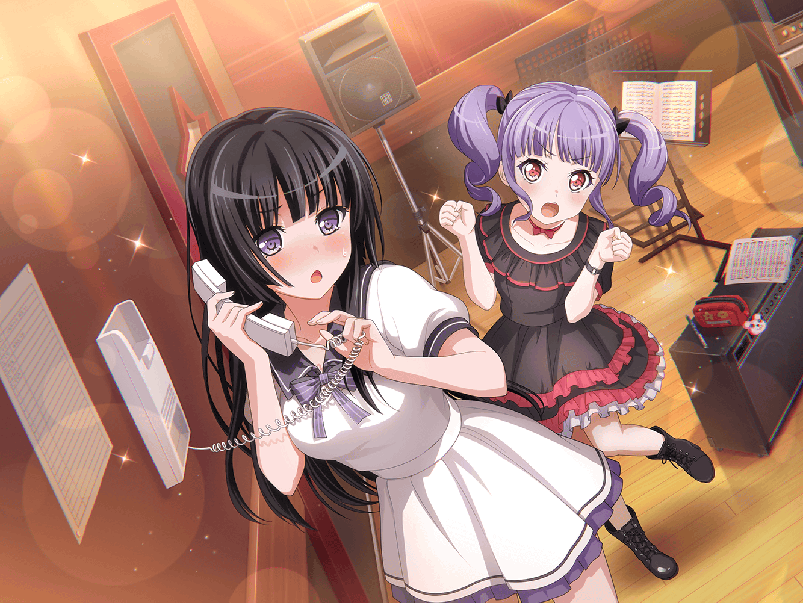
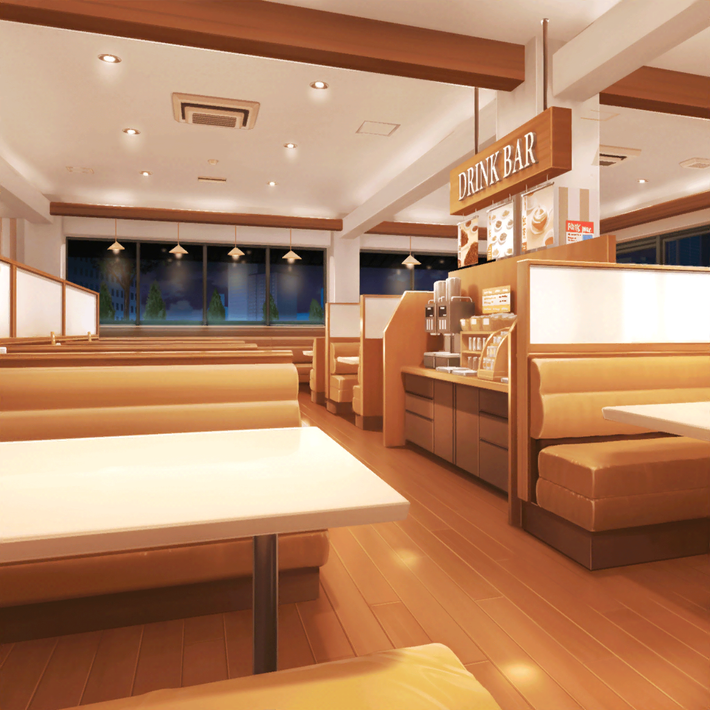
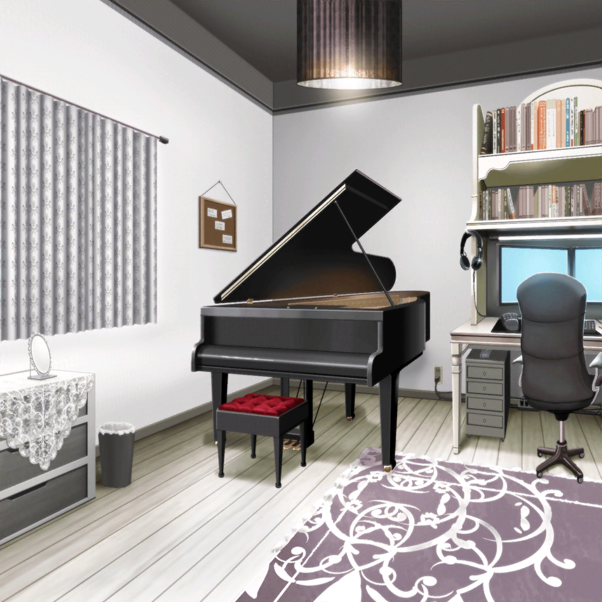

ファミリーレストラン
燐子
（今日は……色々あったなぁ……）
燐子
（スタジオで……受付のスタッフさんに電話したけど……
言いたいことが……上手く伝わっていなかったし……）
燐子
（電話、苦手だけど……いつまでも逃げてちゃ……だめだよね……
上手く……話せるように……ならなくちゃ……
思い切って……今井さんに、お願いしてみよう……）
燐子
あ、あの……今井さん……お願いが、あって……
リサ
ん？ どうしたの？
燐子
今夜……今井さんに……電話しても……いいですか？
リサ
えっ？ いいけど、どうしたの？
燐子
わたし……電話……苦手で……
ちゃんと、話せるように……なりたくて……
今井さんに……練習に付き合ってほしいな……って思って……
リサ
そっか～、なるほどね！
アタシでよければ、喜んで付き合うよ！
いつでも好きな時間にかけていいからね～
燐子
ありがとう……ございます……
じゃあ、あとで……電話……しますね……
燐子
（今井さんに……OK……してもらえた……うれしい……）

白金家 燐子の部屋
燐子
（今井さんに……電話する前に……
話すことを……紙に……メモしておこう……）
燐子
（えっと……
『こんばんは、白金です。遅い時間にごめんなさい。
今日は今井さんが練習にいなくてさびしかったです』……っと）
燐子
（これで……大丈夫かな……
ドキドキするけど……電話、かけてみよう……）
リサ
『もしもし～、燐子？』
燐子
あっ……もしもし……白金です……
今井さん……ですか？
リサ
『うん！ アタシ、今お風呂上がったところなんだよ～
タイミングよく電話くれてよかった！』
燐子
そうなんですね……よかった……
わたしは……ご飯……食べ終わったところで……
リサ
『そうなんだ！ 何食べたの？』
燐子
今日の夕ご飯は……カレーで……
わたしが……作って……
リサ
『カレー？ どんなカレー作ったの？』
燐子
えびと……イカと……あさりを入れて……甘口に……
リサ
『シーフードカレーか～、燐子が作ったの食べてみたいな～！
ところで、電話で話すの初めてだよね～
どう？ 緊張してる？』
燐子
（……あれ？ メモ……見ずに……話せてる……）
燐子
思ったより……緊張……してないかも……
なぜか……今井さんと話すと……落ち着くんです……
リサ
『ほんと！？
話してて落ち着くなんて、初めて言われたよ～
嬉しいなぁ』
燐子
ふふっ……
こんなに電話で話せたの……初めてかも……
リサ
『ちゃんと話せてるじゃん！
他の人ともその調子で話せば大丈夫だよ』
燐子
今井さん……ありがとう……ございます……
がんばって……みますね！
リサ
『うんうん、またいつでも電話してきていいからね！』

翌日
スタジオ
燐子
今井さん……昨日は……ありがとうございました……
リサ
いえいえ～どういたしまして！
力になれたのなら良かったよ
あこ
（昨日何かあったのかな？）
燐子
わたし、もっと……今井さんと話したくて……
今日……帰りに、カフェに……寄って行きませんか？
友希那・紗夜・あこ
！！！
あこ
（あのりんりんが……）
友希那
（リサを……）
紗夜
（誘った！？）
あこ
友希那さん友希那さん、昨日りんりんとリサ姉に
何があったのか知ってますか？
友希那
知らないわね……
紗夜
これまでになく、打ち解けている感じがしますね……
リサ
アタシももっと燐子と話したかったんだ～
んじゃ、練習終わったらカフェいこっか☆
燐子
……はい！